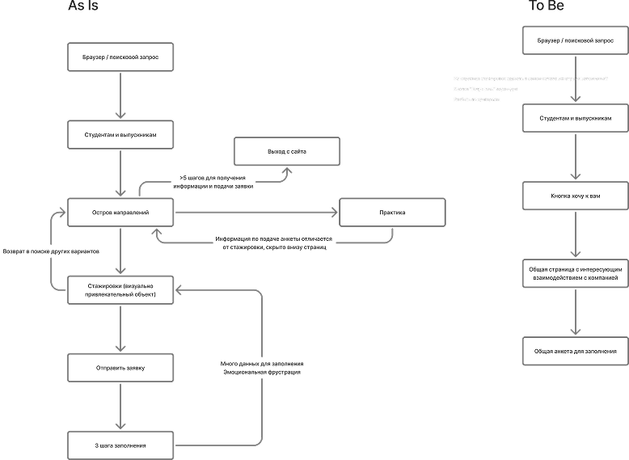
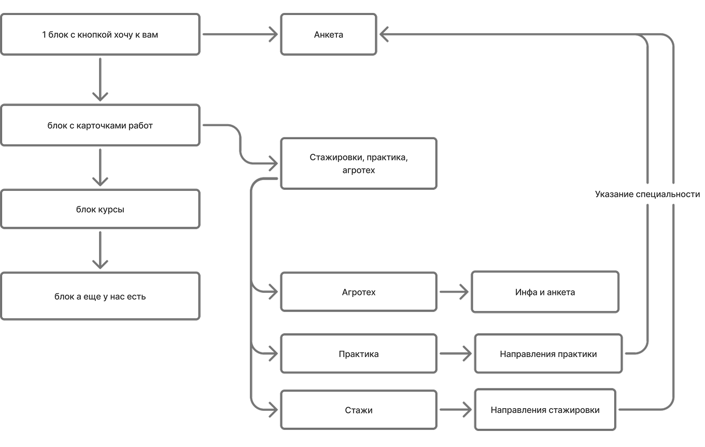

РСХБ.Цифра —
UX-исследование
Выявить причины низкой конверсии студентов в заполнение форм и слабого интереса к другим программам компании на платформе РСХБ.Цифра.
2026
UX-исследование • CJM • Анализ конкурентов • Гипотезы • Рекомендации

Customer Journey Map Карта пути студента с выделением проблемных мест
Болевые точки
Проблемы навигации и внимания:
• Основная плашка «Стажировки» перетягивает всё внимание
• Остальные программы визуально слабее и неконсистентны
Проблемы с анкетой:
• Анкета спрятана в модальном окне и требует долгого скролла
• Неудобный формат и отсутствие прогресса
• Пользователь не видит, открыт ли набор на программу
Гипотеза
Создание единой системы подачи заявок и информирования пользователя обо всех возможностях сервиса (попадания в компанию).
Дополнительные гипотезы:
1. Повышение узнаваемости сайта в поисковых запросах (изменение текста)
2. Уменьшение количества шагов до подачи заявки
3. Создание единой заявки (выбор направления в начале процесса)
4. Центрирование всей информации на одной странице в блочном формате


Анализ конкурентов Изучение решений Яндекса, Сбера и других компаний

Обновленное Userflow Единая точка входа, унифицированная анкета, блоковый формат подачи информации

Гипотезы и решения Единая точка входа, унифицированная анкета, блоковый формат подачи информации